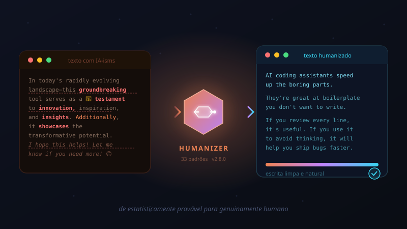

Humanizer
Remove os sinais de escrita gerada por IA do seu texto, tornando-o mais natural e humano. Detecta e corrige 33 padrões identificados pelo guia do Wikipedia "Signs of AI Writing" — de vocabulário inflado e dashes excessivos até finais de chatbot e regras de três. Suporta também calibração de voz: forneça uma amostra da sua escrita e a skill imita seu estilo pessoal.

↓ Baixar e instalar
Instalação global (disponível em todos os seus projetos):
git clone https://github.com/blader/humanizer.git ~/.claude/skills/humanizer
Ou instalação apenas no projeto atual (execute na raiz do projeto):
git clone https://github.com/blader/humanizer.git .claude/skills/humanizer
~ equivale a %USERPROFILE%
(ex.: C:\Users\seu-usuario\.claude\skills\humanizer).
Após instalar, reinicie o Claude Code para a skill ser carregada.
A skill também é compatível com o OpenCode — instale em
~/.config/opencode/skills/humanizer ou reutilize a pasta
~/.claude/skills/, que o OpenCode já escaneia.
⚙ Funcionalidades
A skill analisa o texto fornecido e aplica um processo de três etapas: identificação de padrões, reescrita e uma segunda auditoria para capturar "AI-isms" residuais que passaram na primeira passagem. Os 33 padrões detectados estão organizados em quatro categorias:
Padrões de conteúdo
Inflação de significância, citações superficiais de notoriedade, linguagem promocional, atribuições vagas ("especialistas acreditam") e conclusões genéricas ("o futuro parece brilhante").
Padrões de linguagem
Vocabulário típico de IA (testament, landscape, showcasing, additionally), evitação de cópula (serves as → is), "regra de três", ciclagem de sinônimos e paralelismos negativos.
Padrões de estilo
Em/en dashes excessivos, negrito exagerado, listas com cabeçalho inline, títulos em Title Case, emojis, aspas curvas, pares hifenizados desnecessários e frases de impacto fabricadas.
Padrões de comunicação
Artefatos de chatbot (I hope this helps!), disclaimers de corte de conhecimento, tom sycophantic (Great question!), frases de preenchimento e hedging excessivo.
Calibração de voz
Forneça 2–3 parágrafos da sua própria escrita e a skill analisa seu ritmo, escolhas de palavras e tiques verbais — reescrevendo no seu estilo pessoal, não em um "humano genérico".
Auditoria dupla
Após a primeira reescrita, a skill faz uma segunda passagem buscando por "obviamente gerado por IA" — garantindo que padrões sutis não escapem pela primeira revisão.
★ Dicas
- ✍Preserve o conteúdo, não corte: a skill reescreve sem deletar — se o original tem cinco parágrafos, o resultado também tem cinco. Ótimo para textos longos onde você não quer perder cobertura.
- 🎭Calibração de voz é o diferencial: sem calibração, o resultado soa "humano genérico". Com uma amostra de 2–3 parágrafos seus, o resultado soa como você — ideal para posts, e-mails e docs de times.
- 🔍Baseado no Wikipedia: os padrões vêm do guia Signs of AI Writing, mantido pelo WikiProject AI Cleanup com base em milhares de instâncias reais de texto gerado por IA.
- ⚡Segunda auditoria incluída: a versão 2.2.0+ adiciona uma passagem extra de "obviamente gerado por IA" — útil para textos que precisam passar por revisão humana rigorosa ou detectores de IA.
- 🧩Compatível com OpenCode: instale em
~/.claude/skills/humanizere ambas as ferramentas reconhecem a skill automaticamente — sem instalação dupla.
▶ Uso na prática
Use /humanizer e cole o texto a ser reescrito:
/humanizer No cenário tecnológico atual em rápida evolução, esta ferramenta inovadora — situada na interseção entre pesquisa e prática — serve como um testemunho duradouro do potencial transformador da IA. Além disso, ela demonstra inovação, inspiração e insights. Espero que isso ajude!
Para calibrar com seu estilo pessoal, forneça uma amostra antes do texto a humanizar:
/humanizer Aqui está uma amostra da minha escrita para calibração: [cole 2–3 parágrafos seus aqui] Agora humanize este texto: [cole o texto gerado por IA aqui]
Em sua essência, a proposta de valor é clara: otimizar processos, aprimorar a colaboração e fomentar o alinhamento — não se trata apenas de autocompletar; trata-se de desbloquear a criatividade em escala. 🚀 O futuro é promissor!
Ajuda nas partes chatas. Você escreve menos boilerplate, a colaboração fica mais fácil quando todo mundo tem o mesmo contexto, e as decisões acontecem mais rápido. O risco é que também fica mais fácil entregar ideias pela metade.